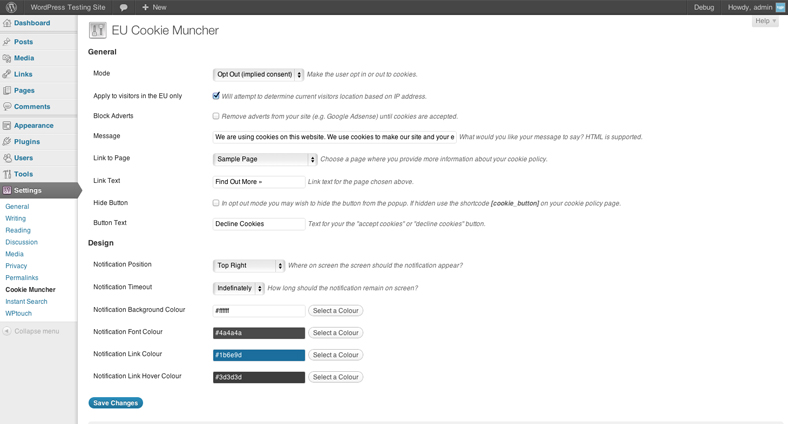
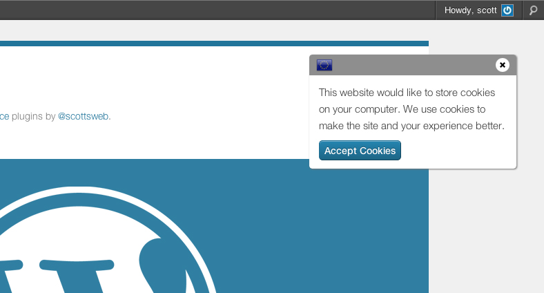

Documentation
EU Cookie Muncher
Created: 05/05/2012
By: Scott Evans
Web: scott.ee
Thank you for purchasing this plugin. If you have any questions that are beyond the scope of this help file, please feel free to email via my user page. Thanks again!
Table of Contents
- About
- Installation
- Cookie Muncher
- Tips
- Changelog
- Upgrading
- Credits
A) About - top
From May 2011 a new privacy law came into effect across the EU. The law requires that websites ask visitors for consent to use most web cookies. This plugin will make your site compliant at the touch of a button.
About the Law
The law was created with the best of intentions but its implementation has not been very well thought out. Different countries within the EU also require different approaches. The short of it all is that any cookies that are not essential for the websites function should not be set without the express permission of the user first.
Essential cookies include those for logging in and shopping carts. Non essential cookies are generally set by tracking scripts such as Google Analytics and social media buttons. In the UK the maximum fine for non-compliance is £500,000. For more information I recommend you have a look at:
Plugin Features
- Mode - Allow visitors to either opt in or opt out (implied consent) of cookies by default
- EU Only - Enable the notification and cookie blocking for visitors within the EU only
- Shortcode - Use the [cookie_button] shortcode on your policy page to allow visitors to change their preference
- Linkable - Directly link visitors to a cookie enabled or disabled site by adding ?cookies=on or ?cookies=off to any page
- Themeable - Easy options for choosing notification colour, position and timeout
- No Adverts - An additional option to remove your websites adverts
- CSS - Create your own stylesheet for a completely custom look
How does it work?
First off we check the IP address of the visitor. If they appear to be outside of the EU then the plugin is not loaded.
Opt Out (implied consent) Mode
Your website loads as normal with all cookie setting tools. A notification is shown to the visitor explaining you use cookies. From this notification the visitor can choose to decline cookies or find out more. If they decline cookies the page is reloaded, this time such as Google Analytics, twitter and Facebook social buttons are removed from the page. Their preference is remembered for one year.
Opt In Mode
We scan your sites HTML for scripts and tools that do not comply with the directive, such as Google Analytics, twitter and Facebook social buttons. These scripts are removed from the page and a customisable notification is shown to the user inviting them to "accept cookies". Once they accept cookies the preference is remembered for one year and your cookie setting scripts jump back to life.
What does it currently block?
- Google Analytics
- WordPress.com Stats
- Twitter Tweet Buttons
- Tweetmeme
- Facebook Like Buttons
- Google+ Buttons
- StumbleUpon
- Pinterest
- Digg
- ShareThis
- AddThis
- Parse.ly
- KISSmetrics
- Peerius
- Clicky
- Woopra
- Webtrends
- Doubleclick / Google Adsense (optional)
- BuySellAds (optional)
- Skimlinks (optional)
- Adbrite (optional)
But my site uses xxx.js tracker/adverts…
I'm glad you said that. There are thousands of potential tracking scripts present across the web and they are not particularly easy to locate. I would like to invite you to make suggestions and provide links to other services that set cookies in the comments section. I can then extend the checks to remove more third party tools in future.
How can I test what is setting cookies and if it's working?
There are three things you should do:
- View the source of your site with the plugin active. We add a comment to the very bottom indicating how many cookie settings scripts have been removed
- Install Ghostery for your browser to highlight tracking scripts as you browse the web
- Install the Web Developer toolbar to see which scripts are actually settings cookies
B) Installation - top
To install this plugin:
- Upload the `cookie-muncher` folder to the `/wp-content/plugins/` directory on your WordPress website
- Activate the plugin through the 'Plugins' menu in WordPress
- Tweak the settings in `Settings -> Cookie Muncher` (details below)
Visit WordPress.org for a comprehensive guide on this process and more information on plugins.
C) Cookie Muncher - top

From the `Settings -> Cookie Muncher` menu you can customise:
- Mode: Choose if visitors should opt in or opt out of cookies
- Apply to EU visitors only: Enable this to use geo location services based on the visitors IP
- Block Adverts: Decide if you want to remove adverts as well
- Message: Customise the notification message about cookies
- Link to Page: If you have a page on your site detailing cookie use (e.g. a Privacy Policy) you can link to it (optional)
- Link Text: The link text for the page above
- Hide Button: In Opt Out mode you can hide the button to discourage visitors opting out before reading your cookie policy
- Button Text: The button text for your 'accept cookies' button
- Notification Position: Choose a location on your screen where you want the popup to appear
- Notification Timeout: The pop up will auto hide after a certain number of seconds
- Notification Background Colour: Choose a background colour for the notification
- Notification Font Colour: Choose a font colour for the notification
- Notification Link Colour: Choose a link colour for the notification
- Notification Link Hover Colour: Choose a link hover colour for the notification

D) Tips - top
A few tips:
- Message: Keep the notification message short and link through to a deeper page detailing cookie use
- Position: Ensure the notification position does not cover crucial areas of your site
- Colour: Ensure there is plenty of contrast between your colour choices for better usability
- CSS: Copy the /assets/css/cookie_muncher.css file to your theme folder to completely customise the look and feel
- Shortcode: Use the [cookie_button enable_text="Cookies ON" disable_text="Cookies OFF"] shortcode on your policy page to allow visitors to change their settings
E) Changelog - top
Version 1.4 (in progress)
- Better support for https:// websites
Version 1.3
- Improved shortcode customisation [cookie_button enable_text="Cookies ON" disable_text="Cookies OFF"]
- Shortcode loaded for front end only
- Update noty library to 1.2.1
- Updated default settings
- Added JavaScript cookie check to improve compatibility with cached sites
- Added 20 seconds as a timeout option
- Conditional functions for theme developers: cookies_off() & cookies_on() to provide alternative content depending on state
- Added Woopra and Webtrends Blocking
Version 1.2
- Run in implied consent (opt out) mode - please re-save your plugin options after updating
- New shortcode [cookie_button] to enable visitors to turn cookies on or off, add to your cookie policy page
- Closing the notification will now stop the pop up showing again (yes it sets a cookie!)
- Added support for Twitter widgets
- Made some small tweaks to improve JavaScript compatibility
- Fixed bug where HTML tags were stripped when saving
Version 1.1
- Added check for AJAX request compatibility
- New service: chart.dk tracking code
- Updated Facebook to include the Facebook Like Box
- Added support for the DP Social Share WordPress Plugin
Version 1.0
F) Upgrading - top
Upgrade advisories:
- 1.0 or 1.1 → 1.2 - You will need to update your settings once the plugin has been updated.
G) Credits - top
This plugin makes use of:
Once again, thank you so much for purchasing this plugin. If you have a more general question relating to the plugins on CodeCanyon, you might consider visiting the forums and asking your question in the "Item Discussion" section.
Scott Evans
Go To Table of Contents